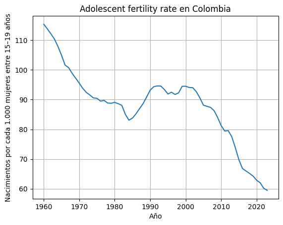
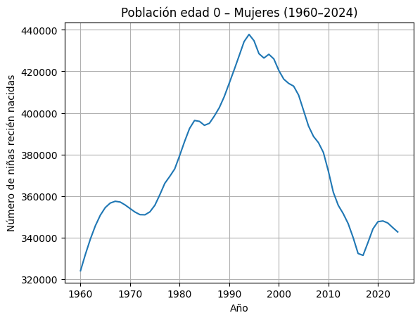
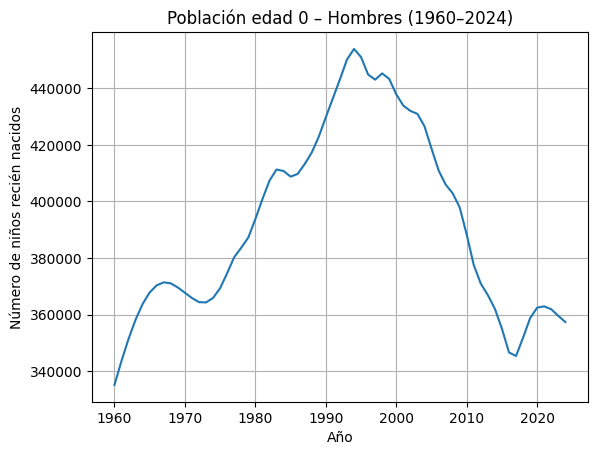

#Importamos las librerias
import pandas as pd
import matplotlib.pyplot as plt
import seaborn as sns
import numpy as np
from scipy.stats import pearsonr
import pingouin as pg
#Cargamos el data set
df = pd.read_csv(r"C:\py proyectos\EDA Vizdata\a6229004-b9bf-4015-9569-b0b826d6db87_Data.csv")
# Eliminamos las últimas 5 filas que no necesitamos porque son la fuente y la fecha de actualización
df = df.iloc[0:474, 0:69]
print("Dataset cargado con éxito. Dimensiones:", df.shape)1 EDA Visualización de Datos y Toma de Desiciones
1.0.1 Alvarado Natalia y Mujica Camilo
1.0.2 2026-02-21
1.1 ANALISIS EXPLORATORIO DE DATOS
En el presente documento se realiza un análisis del conjunto de datos obtenido de la base World Bank, específicamente de la fuente Health Nutrition and Population Statistics, disponible en el siguiente enlace: https://databank.worldbank.org/source/health-nutrition-and-population-statistics
Este dataset recopila información sobre indicadores de salud, nutrición y población para más de 266 territorios a nivel mundial. Entre estos territorios se incluyen principalmente países, pero también agregaciones regionales que agrupan varios países, así como conjuntos de islas y otras divisiones geográficas.
Cada territorio cuenta con múltiples indicadores asociados. Entre ellos se encuentran, por ejemplo: la tasa de fecundidad adolescente (nacimientos por cada 1.000 mujeres entre 15 y 19 años), la cantidad de adultos (15 años o más) y niños (0 a 14 años) que viven con VIH, la edad al primer matrimonio en mujeres y hombres, entre muchos otros. En total, el dataset contiene 474 indicadores distintos.
La estructura del archivo incluye columnas correspondientes al nombre del indicador, código del indicador, nombre del país, código del país y valores anuales comprendidos entre 1960 y 2024. ## CARGA DEL DATASET
2 Dimensión de nuestro dataset
El resultado indica que el conjunto de datos posee:
474 filas
69 columnas
Esto significa que el dataset contiene 474 observaciones y 69 variables asociadas. # Set de datos La información recolectada se encuentra almacenada en un archivo en formato CSV, el cual contiene 479 filas y 69 columnas. Cada registro corresponde a un indicador específico de salud, nutrición o población asociado a un país o territorio determinado. Es decir, cada fila representa la combinación de un indicador y un territorio, mientras que las columnas contienen información descriptiva y valores anuales del indicador. Las columnas son:
Series.Name: Contiene el nombre del indicador de salud o población (por ejemplo, tasa de fecundidad, esperanza de vida, prevalencia de VIH, entre otros) (Categórica)
Series.Code: Código único asignado por el Banco Mundial para identificar cada indicador. (Categórica)
Country.Name: : Nombre del país o territorio al que pertenecen los datos.(Categórica)
Country.Code: Código estandarizado del país según la clasificación internacional.(Categórica)
Variables temporales(1960-2024): Cada una de estas columnas contiene el valor cuantitativo del indicador correspondiente para un año específico. (Numéricas)
3 Transformación del dataset
El formato ancho dificulta la manipulación, visualización y análisis de series temporales, por lo que se realizó una transformación a formato largo siguiendo el principio de Tidy Data.
#Hacemos una lista de las columnas que no son años
id_vars = ['Series Name', 'Series Code', 'Country Name', 'Country Code']
#Hacemos una lista con las columnas que sí son años
year_cols = [col for col in df.columns if col not in id_vars]
# Transformar de formato ancho (Wide) a largo (Long)
df_long = pd.melt(df,
id_vars=id_vars,
value_vars=year_cols,
var_name='Year',
value_name='Value')
df_long = df_long.sort_values(by='Series Name').reset_index()
# Limpieza de cadenas y tipos de datos
# 1. Limpiar el nombre del año (ej: de '1960 [YR1960]' a '1960')
df_long['Year'] = df_long['Year'].str.extract('^(\d{4})').astype(int)
# 2. Manejar valores nulos (en el original vienen como "..")
df_long['Value'] = df_long['Value'].replace('..', np.nan)
df_long['Value'] = pd.to_numeric(df_long['Value'])
df_long.head()<>:17: SyntaxWarning: invalid escape sequence '\d'
<>:17: SyntaxWarning: invalid escape sequence '\d'
/tmp/ipython-input-570/4129222894.py:17: SyntaxWarning: invalid escape sequence '\d'
df_long['Year'] = df_long['Year'].str.extract('^(\d{4})').astype(int)| index | Series Name | Series Code | Country Name | Country Code | Year | Value | |
|---|---|---|---|---|---|---|---|
| 0 | 18074 | AIDS estimated deaths (UNAIDS estimates) | SH.DYN.AIDS.DH | Colombia | COL | 1998 | 4200.0 |
| 1 | 18548 | AIDS estimated deaths (UNAIDS estimates) | SH.DYN.AIDS.DH | Colombia | COL | 1999 | 4900.0 |
| 2 | 62 | AIDS estimated deaths (UNAIDS estimates) | SH.DYN.AIDS.DH | Colombia | COL | 1960 | NaN |
| 3 | 6224 | AIDS estimated deaths (UNAIDS estimates) | SH.DYN.AIDS.DH | Colombia | COL | 1973 | NaN |
| 4 | 2432 | AIDS estimated deaths (UNAIDS estimates) | SH.DYN.AIDS.DH | Colombia | COL | 1965 | NaN |
Puesto que el presente análisis se enfoca exclusivamente en Colombia, las columnas Country.Name y Country.Code resultan redundantes, ya que todos los registros corresponden al mismo país. De manera similar, la columna Series.Code, si bien contiene información valiosa sobre la codificación de los indicadores, no es necesaria para el análisis descriptivo y visual que se realizará, donde el nombre del indicador (Series.Name) proporciona contexto suficiente. Por lo tanto, se procede a eliminar estas columnas para trabajar con un dataset más limpio y eficiente, conservando únicamente las variables esenciales: Series.Name (nombre del indicador), Year (año) y Value (valor del indicador).
# 3. Eliminar columnas redundantes para el análisis de Colombia (como en el link)
df_long = df_long.drop(columns=['Country Name', 'Country Code', 'Series Code','index'])
df_long| Series Name | Year | Value | |
|---|---|---|---|
| 0 | AIDS estimated deaths (UNAIDS estimates) | 1998 | 4200.0 |
| 1 | AIDS estimated deaths (UNAIDS estimates) | 1999 | 4900.0 |
| 2 | AIDS estimated deaths (UNAIDS estimates) | 1960 | NaN |
| 3 | AIDS estimated deaths (UNAIDS estimates) | 1973 | NaN |
| 4 | AIDS estimated deaths (UNAIDS estimates) | 1965 | NaN |
| ... | ... | ... | ... |
| 30805 | Young people (ages 15-24) newly infected with HIV | 1972 | NaN |
| 30806 | Young people (ages 15-24) newly infected with HIV | 2011 | 2200.0 |
| 30807 | Young people (ages 15-24) newly infected with HIV | 1971 | NaN |
| 30808 | Young people (ages 15-24) newly infected with HIV | 1991 | 1700.0 |
| 30809 | Young people (ages 15-24) newly infected with HIV | 2024 | NaN |
30810 rows × 3 columns
4 Análisis univariado.
Analicemos las carateristicas generales de cada variable de nuestro set de datos.
df_long.info()<class 'pandas.core.frame.DataFrame'>
RangeIndex: 30810 entries, 0 to 30809
Data columns (total 3 columns):
# Column Non-Null Count Dtype
--- ------ -------------- -----
0 Series Name 30810 non-null object
1 Year 30810 non-null int64
2 Value 17113 non-null float64
dtypes: float64(1), int64(1), object(1)
memory usage: 722.2+ KB5 Análisis de las variables categórica
5.1 Series.name
# Analicemos cuantos datos tenemos por indicador
cobertura = df_long.groupby('Series Name').agg(
total_registros=('Value', 'size'),
años_con_datos=('Value', 'count'),
años_sin_datos=('Value', lambda x: x.isnull().sum())
).reset_index()
# Calcular el porcentaje de cobertura
cobertura['porcentaje_cobertura'] = (cobertura['años_con_datos'] / cobertura['total_registros']) * 100
# Definimos una función para categorizar los indicadores según porcentaje de datos
def categorizar(porcentaje):
if porcentaje >= 80:
return "Alta cobertura (≥80%)"
elif 50 <= porcentaje < 80:
return "Cobertura media (50–79%)"
else:
return "Baja cobertura (<50%)"
cobertura['categoria'] = cobertura['porcentaje_cobertura'].apply(categorizar)
resumen_categorias = cobertura['categoria'].value_counts().reset_index()
resumen_categorias.columns = ['categoria', 'n']
resumen_categorias['porcentaje'] = (resumen_categorias['n'] / resumen_categorias['n'].sum() * 100).round(1)
#Preparamos la gráfica
orden_categorias = ["Alta cobertura (≥80%)", "Cobertura media (50–79%)", "Baja cobertura (<50%)"]
resumen_categorias['categoria'] = pd.Categorical(resumen_categorias['categoria'], categories=orden_categorias, ordered=True)
resumen_categorias = resumen_categorias.sort_values('categoria')
print("Distribución de indicadores por cobertura:")
print(resumen_categorias)
plt.figure(figsize=(10, 6))
colors = ["#1F4E79", "#4A7A9C", "#7BA0B9"]
ax = sns.barplot(
data=resumen_categorias,
x='categoria',
y='n',
palette=colors,
hue='categoria',
legend=False
)
for p in ax.patches:
ax.annotate(f'{int(p.get_height())}',
(p.get_x() + p.get_width() / 2., p.get_height()),
ha = 'center', va = 'center',
xytext = (0, 9),
textcoords = 'offset points',
fontweight='bold')
plt.title('Distribución de Indicadores según su Cobertura de Datos', fontsize=14, fontweight='bold')
plt.ylabel('Cantidad de Indicadores')
plt.xlabel('Nivel de Cobertura')
plt.ylim(0, resumen_categorias['n'].max() * 1.1)
sns.despine()
plt.show()Distribución de indicadores por cobertura:
categoria n porcentaje
1 Alta cobertura (≥80%) 181 38.2
2 Cobertura media (50–79%) 67 14.1
0 Baja cobertura (<50%) 226 47.7
El análisis de cobertura temporal revela que el 47.7% de los indicadores presenta baja cobertura (<50%), lo que indica una disponibilidad limitada de datos a lo largo del período 1960–2024. Esto sugiere que una proporción considerable de indicadores no cuenta con suficiente respaldo histórico para realizar análisis de tendencia de largo plazo.
Por otro lado, el 38.2% de los indicadores muestra alta cobertura (≥80%), lo que garantiza una base sólida para estudios longitudinales y análisis comparativos en el tiempo.
Estos resultados evidencian que, aunque el dataset es amplio en términos de cantidad de indicadores, la calidad y continuidad temporal de la información es heterogénea.Por lo tanto, para los análisis posteriores se priorizarán los indicadores con alta cobertura, con el fin de asegurar mayor consistencia y confiabilidad en los resultados.
indicadores_alta_cobertura = cobertura[cobertura['años_con_datos']>50]
print("Número de indicadores con alta cobertura:", len(indicadores_alta_cobertura))
print("Porcentaje del total:",round(len(indicadores_alta_cobertura)/len(cobertura)*100,2),"%")
df_long= df_long[df_long['Series Name'].isin(indicadores_alta_cobertura['Series Name'])]
df_long.sort_values(by='Year').head()Número de indicadores con alta cobertura: 181
Porcentaje del total: 38.19 %| Series Name | Year | Value | |
|---|---|---|---|
| 12007 | Mortality rate, infant, male (per 1,000 live b... | 1960 | 103.000000 |
| 1807 | Age population, age 07, male | 1960 | 242063.000000 |
| 17703 | Population ages 15-19, male | 1960 | 791451.000000 |
| 19184 | Population ages 35-39, male (% of male populat... | 1960 | 4.857912 |
| 19242 | Population ages 40-44, female | 1960 | 319196.000000 |
Tras aplicar el criterio de selección, el conjunto de datos se reduce de 474 a 181 indicadores, lo que representa una depuración del 61.8% de los indicadores originales. Este filtrado mejora la calidad del análisis al concentrarse en variables con suficiente continuidad temporal.
6 Análisis de las variables numéricas
6.1 Year
df_long['Year'].describe()| Year | |
|---|---|
| count | 11765.00000 |
| mean | 1992.00000 |
| std | 18.76246 |
| min | 1960.00000 |
| 25% | 1976.00000 |
| 50% | 1992.00000 |
| 75% | 2008.00000 |
| max | 2024.00000 |
La variable Year presenta un rango entre 1960 y 2024. La coincidencia entre media y mediana (1992) indica una distribución temporal simétrica, sin concentración excesiva en años específicos dentro del período analizado.
7 Value
na = df_long['Value'].isnull().sum()
pd.options.display.float_format = '{:20,.2f}'.format
resumen = df_long['Value'].describe().reset_index()
resumen.loc[len(resumen)] = ['NA\'s',na]
resumen.set_index(resumen.columns[0], inplace=True)
resumen| Value | |
|---|---|
| index | |
| count | 11,734.00 |
| mean | 1,226,070.37 |
| std | 4,374,082.87 |
| min | -98,057.00 |
| 25% | 14.77 |
| 50% | 209,957.25 |
| 75% | 418,892.50 |
| max | 52,886,363.00 |
| NA's | 31.00 |
El análisis descriptivo de la variable Value muestra una alta dispersión en los datos. El valor mínimo registrado es de -98.057, mientras que el valor máximo alcanza 52.886.363, lo que evidencia una amplitud considerable entre los indicadores analizados.
La media (1.226.070) es significativamente mayor que la mediana (209.957), lo que indica una fuerte asimetría positiva en la distribución. Esto sugiere la presencia de valores extremadamente altos que influyen en el promedio, mientras que la mayoría de las observaciones se concentra en magnitudes considerablemente menores.
El primer cuartil (15) y el tercer cuartil (418.892) muestran que el 50% central de los datos se ubica en un rango amplio, lo cual refleja la coexistencia de indicadores medidos en distintas escalas y unidades. En consecuencia, la variable no puede interpretarse como una medida homogénea, sino como la agregación de múltiples fenómenos demográficos y de salud.
Finalmente, se identificaron 31 valores faltantes (NA) dentro del subconjunto de indicadores de alta cobertura, lo que representa una proporción reducida en comparación con el total de observaciones filtradas.
#Veamos que indicador nos arroja ese valor negativo alto.
df_long[df_long['Value']==df_long['Value'].min()]| Series Name | Year | Value | |
|---|---|---|---|
| 12346 | Net migration | 1976 | -98,057.00 |
El valor mínimo observado (-98.057) corresponde al indicador de migración neta en el año 1976. Este valor negativo indica que, durante ese año, Colombia registró una mayor cantidad de emigrantes que inmigrantes.
sns.histplot(x=df_long['Value'])
plt.yscale('log')
plt.title('Distribución General de la Variable Value')
plt.xlabel('Valor')
plt.ylabel('Frecuencia')
Text(0, 0.5, 'Frecuencia')
La distribución general de la variable Value muestra una marcada asimetría positiva. La mayor parte de las observaciones se concentra en valores bajos, cercanos a cero, mientras que un número reducido de registros alcanza magnitudes extremadamente altas, generando una cola larga hacia la derecha. Esta concentración provoca que el histograma se vea comprimido en el extremo inferior del eje horizontal, dificultando la visualización detallada de la mayoría de los datos. Este comportamiento es consistente con la diferencia observada entre la media y la mediana, y refleja la coexistencia de indicadores medidos en escalas muy distintas dentro del mismo conjunto de datos. Por lo tanto, no es apropiado interpretar esta variable de manera agregada, siendo más adecuado analizar cada indicador de forma individual.
#Análisis de la serie de tiempo. Con el fin de realizar un análisis más profundo y coherente, se seleccionaron tres indicadores específicos: la tasa de fecundidad adolescente y la población de 0 años desagregada por sexo. Esta selección responde a un criterio demográfico, ya que la fecundidad adolescente constituye un determinante relevante en la dinámica poblacional, mientras que el tamaño de la cohorte infantil permite observar los efectos agregados del comportamiento reproductivo en el tiempo.
El análisis conjunto de estos indicadores permite explorar posibles relaciones entre la evolución de la fecundidad y la estructura etaria temprana en Colombia, facilitando una interpretación más integrada del fenómeno poblacional durante el período 1960–2024. Con el fin de contestar la siguiente pregunta: ¿Existe una relación entre la evolución de la fecundidad adolescente y el tamaño de la cohorte infantil en Colombia desde 1960 hasta 2024?
indicadores_interes = [
"Adolescent fertility rate (births per 1,000 women ages 15-19)",
"Age population, age 00, female",
"Age population, age 00, male"
]
df_3 = df_long[df_long['Series Name'].isin(indicadores_interes)]
df_3.sort_values(by='Year').head(n=10)| Series Name | Year | Value | |
|---|---|---|---|
| 181 | Adolescent fertility rate (births per 1,000 wo... | 1960 | 115.37 |
| 844 | Age population, age 00, female | 1960 | 323,946.50 |
| 907 | Age population, age 00, male | 1960 | 335,109.00 |
| 146 | Adolescent fertility rate (births per 1,000 wo... | 1961 | 113.80 |
| 838 | Age population, age 00, female | 1961 | 331,942.00 |
| 851 | Age population, age 00, male | 1961 | 343,584.00 |
| 823 | Age population, age 00, female | 1962 | 339,285.50 |
| 150 | Adolescent fertility rate (births per 1,000 wo... | 1962 | 112.15 |
| 869 | Age population, age 00, male | 1962 | 351,374.00 |
| 780 | Age population, age 00, female | 1963 | 345,638.50 |
8 Fecundidad adolescente
sns.lineplot(df_3[df_3['Series Name']=='Adolescent fertility rate (births per 1,000 women ages 15-19)'],x='Year',y='Value')
plt.title("Adolescent fertility rate en Colombia")
plt.xlabel('Año')
plt.ylabel('Nacimientos por cada 1.000 mujeres entre 15–19 años')
plt.grid()
La tasa de fecundidad adolescente en Colombia presenta una tendencia general descendente entre 1960 y 2024. En los años 60 supera los 110 nacimientos por cada 1.000 mujeres (15–19), disminuye de forma sostenida en los 70 y principios de los 80, y muestra un leve repunte a finales de los 80 y durante los 90.
A partir de los años 2000 la tendencia vuelve a ser claramente decreciente, intensificándose después de 2010 hasta alcanzar valores cercanos a 60 en los años más recientes. En conjunto, el comportamiento del indicador evidencia un cambio estructural en los patrones reproductivos adolescentes, posiblemente asociado a transformaciones demográficas, educativas y en políticas de salud pública.
df_3[df_3['Series Name']=="Adolescent fertility rate (births per 1,000 women ages 15-19)"].describe()['Value']| Value | |
|---|---|
| count | 64.00 |
| mean | 88.19 |
| std | 12.69 |
| min | 59.47 |
| 25% | 83.95 |
| 50% | 90.08 |
| 75% | 94.15 |
| max | 115.37 |
El indicador presenta un valor mínimo de 59.47 y un máximo de 115.37 nacimientos por cada 1.000 mujeres adolescentes, lo que evidencia una amplitud considerable en el período analizado.
La media (88.19) es ligeramente inferior a la mediana (90.08), lo que sugiere una leve asimetría negativa, consistente con la tendencia descendente observada en los años más recientes.
El 50% central de los datos se encuentra entre 83.95 (Q1) y 94.15 (Q3), indicando que la mayor parte de los valores históricos se concentró en ese rango.
La desviación estándar de 12.69 indica una dispersión moderada respecto a la media. En términos relativos (CV: Sirve para medir qué tan grande es la variabilidad en relación con el tamaño del promedio≈ 14%), el indicador presenta variabilidad controlada, consistente con una tendencia descendente progresiva más que con fluctuaciones abruptas.
9 Población edad 00 – Mujeres
sns.lineplot(df_3[df_3['Series Name']=="Age population, age 00, female"],x='Year',y='Value')
plt.title("Población edad 0 – Mujeres (1960–2024)")
plt.xlabel('Año')
plt.ylabel("Número de niñas recién nacidas")
plt.grid()
La población femenina de edad 0 en Colombia muestra un crecimiento sostenido desde 1960 hasta mediados de la década de 1990, pasando de aproximadamente 325.000 nacimientos a un máximo cercano a 440.000. Este incremento refleja el crecimiento demográfico y los altos niveles de fecundidad del período.
A partir de finales de los años 90 se observa una tendencia descendente progresiva, que se intensifica después de 2010, alcanzando uno de sus niveles más bajos alrededor de 2017. En los años recientes se aprecia una leve recuperación, aunque sin alcanzar los máximos históricos.
En conjunto, el comportamiento evidencia el proceso de transición demográfica del país, caracterizado por una reducción sostenida en los niveles de natalidad.
df_3[df_3['Series Name']=="Age population, age 00, female"].describe()['Value']| Value | |
|---|---|
| count | 65.00 |
| mean | 377,062.63 |
| std | 32,507.40 |
| min | 323,946.50 |
| 25% | 350,888.50 |
| 50% | 369,383.50 |
| 75% | 402,517.00 |
| max | 437,818.00 |
La población femenina de edad 0 presenta un valor mínimo de 323.947 y un máximo de 437.818 nacimientos, lo que refleja una variación considerable a lo largo del período analizado.
La media (377.063) es ligeramente superior a la mediana (369.384), lo que indica una leve asimetría positiva, influenciada por los valores más altos registrados durante el pico demográfico de los años 90.
El 50% central de los datos se ubica entre 350.889 (Q1) y 402.517 (Q3), mostrando que la mayoría de los años se concentraron en ese rango. En conjunto, los estadísticos confirman el crecimiento sostenido hasta mediados de los 90 y la posterior disminución observada en el análisis temporal.
La desviación estándar representa aproximadamente el 8.6% de la media, lo que evidencia baja dispersión relativa y confirma un comportamiento demográfico estable en el largo plazo. # Población edad 00 – Hombres
sns.lineplot(df_3[df_3['Series Name']=="Age population, age 00, male"],x='Year',y='Value')
plt.title("Población edad 0 – Hombres (1960–2024)")
plt.xlabel('Año')
plt.ylabel("Número de niños recién nacidos")
plt.grid()
La población masculina de edad 0 en Colombia presenta un comportamiento similar al observado en mujeres. Entre 1960 y mediados de los años 90 se evidencia un crecimiento sostenido, pasando de aproximadamente 335.000 nacimientos a un máximo cercano a 455.000.
A partir de finales de los 90 inicia una tendencia descendente progresiva, que se acentúa después de 2010, alcanzando un mínimo alrededor de 2017. Posteriormente se observa una leve recuperación, aunque los niveles recientes permanecen por debajo del pico histórico.
Este patrón confirma el proceso de transición demográfica del país, caracterizado por una disminución estructural en la natalidad.
df_3[df_3['Series Name']=="Age population, age 00, male"].describe()['Value']| Value | |
|---|---|
| count | 65.00 |
| mean | 392,091.89 |
| std | 33,626.59 |
| min | 335,109.00 |
| 25% | 364,270.50 |
| 50% | 383,633.00 |
| 75% | 418,677.50 |
| max | 453,895.00 |
La población masculina de edad 0 presenta un valor mínimo de 335.109 y un máximo de 453.895 nacimientos, evidenciando una amplitud similar a la observada en mujeres, aunque con niveles consistentemente superiores.
La media (392.092) es ligeramente mayor que la mediana (383.633), lo que indica una leve asimetría positiva, asociada a los valores más altos registrados durante el pico demográfico de los años 90.
El 50% central de los datos se encuentra entre 364.271 (Q1) y 418.678 (Q3), lo que confirma que la mayor parte de los años se concentró en ese intervalo. Estos estadísticos respaldan el patrón de crecimiento sostenido hasta mediados de los 90 y la posterior reducción progresiva de la natalidad.
Con un coeficiente de variación cercano al 8.5%, el indicador presenta una dispersión baja y un patrón altamente consistente a lo largo del tiempo.
from matplotlib import scale
df_3["Media_Indicador"] = df_3.groupby("Series Name")["Value"].transform("mean")
df_3["Cambio_pct_media"] = df_3.groupby("Series Name")["Value"].transform(lambda x:(x-x.mean())/x)*100
df_3.sort_values(by='Series Name')
sns.set_style("ticks",{'axes.grid' : True})
sns.relplot(data=df_3, x="Year", y="Cambio_pct_media", col="Series Name",kind='line')
/tmp/ipython-input-570/3141178090.py:2: SettingWithCopyWarning:
A value is trying to be set on a copy of a slice from a DataFrame.
Try using .loc[row_indexer,col_indexer] = value instead
See the caveats in the documentation: https://pandas.pydata.org/pandas-docs/stable/user_guide/indexing.html#returning-a-view-versus-a-copy
df_3["Media_Indicador"] = df_3.groupby("Series Name")["Value"].transform("mean")
/tmp/ipython-input-570/3141178090.py:3: SettingWithCopyWarning:
A value is trying to be set on a copy of a slice from a DataFrame.
Try using .loc[row_indexer,col_indexer] = value instead
See the caveats in the documentation: https://pandas.pydata.org/pandas-docs/stable/user_guide/indexing.html#returning-a-view-versus-a-copy
df_3["Cambio_pct_media"] = df_3.groupby("Series Name")["Value"].transform(lambda x:(x-x.mean())/x)*100
El análisis del cambio porcentual respecto a la media permite identificar con mayor claridad los períodos estructuralmente altos y bajos de cada indicador.
En la tasa de fecundidad adolescente, los años 60 se ubican más de 25% por encima del promedio histórico, mientras que a partir de 2010 los valores caen progresivamente hasta situarse cerca de 30% por debajo de la media. Esto confirma un cambio estructural profundo en el comportamiento reproductivo adolescente.
En el caso de la población de edad 0 (mujeres y hombres), los valores se mantienen por debajo de la media en los años 60, superan el promedio durante las décadas de 1980 y 1990 (con picos cercanos al 15%), y posteriormente descienden nuevamente por debajo de la media en los años recientes.
La similitud entre hombres y mujeres evidencia un patrón demográfico consistente, mientras que la mayor amplitud observada en la fecundidad adolescente refleja una transformación más dinámica en ese indicador.
# Relación entre fecundidad adolescente y población infantil
df_relacion = df_3.filter(items =['Series Name','Year', 'Value'])
df_relacion = df_relacion.pivot(
index="Year",
columns="Series Name",
values="Value"
).reset_index()
# Renombrar columnas para facilitar
df_relacion.rename(columns={'Adolescent fertility rate (births per 1,000 women ages 15-19)':"Fecundidad_Adolescente",'Age population, age 00, female':'Poblacion_Femenina_0','Age population, age 00, male':'Poblacion_Masculina_0'},inplace=True)
# Calcular población infantil total
df_relacion['Poblacion_Infantil_Total'] = df_relacion['Poblacion_Femenina_0'] + df_relacion['Poblacion_Masculina_0']
# Correlación
# Usamos mask para evitar los NA's
x=df_relacion['Fecundidad_Adolescente']
y=df_relacion['Poblacion_Infantil_Total']
mask = x.notna() & y.notna()
print("Correlación entre los indicadores Fecundidad_Adolescente y Poblacion_Infantil_Total")
print(pg.corr(x[mask], y[mask]))
Correlación entre los indicadores Fecundidad_Adolescente y Poblacion_Infantil_Total
n r CI95 p_val BF10 \
pearson 64 0.19 [-0.05, 0.42] 0.12 0.498
power
pearson 0.34 sns.regplot(df_relacion,x='Fecundidad_Adolescente',y='Poblacion_Infantil_Total')
plt.title('Relación entre fecundidad adolescente y población infantil total')
plt.xlabel('Tasa de fecundidad adolescente')
plt.ylabel('Población infantil total (edad 0)')Text(0, 0.5, 'Población infantil total (edad 0)')
0.1946 es una correlación positiva muy débil,indica que existe una leve tendencia a que cuando aumenta la fecundidad adolescente, también aumente la población infantil total, pero la relación es muy tenue.
p = 0.1233 > 0.05, No hay evidencia estadísticamente significativa para afirmar que existe una correlación entre la fecundidad adolescente y la población infantil total en Colombia durante el período analizado.
El intervalo inluye el 0 así que no podemos asegurar si la relación es positiva, negativa o inexistente.
En conclusión, no existe una relación lineal estadísticamente significativa entre la fecundidad adolescente y la población infantil total en Colombia entre 1960 y 2024.
Esto puede deberse a:
La fecundidad adolescente es solo una parte de la fecundidad total. Las mujeres adultas (20+ años) aportan muchos más nacimientos.
Cambios demográficos estructurales: La población infantil total está influenciada por múltiples factores (fecundidad general, mortalidad infantil, migración, etc.).
10 Prueba con rezagos
El objetivo fundamental de aplicar rezagos es entender relaciones de causa-efecto a lo largo del tiempo
# Creamos rezagos de 5, 10 y 15 años
df_rezagos = df_relacion.sort_values(by='Year')
df_rezagos['Fecundidad_lag5']= df_rezagos['Fecundidad_Adolescente'].shift(5)
df_rezagos['Fecundidad_lag10']= df_rezagos['Fecundidad_Adolescente'].shift(10)
df_rezagos['Fecundidad_lag15']= df_rezagos['Fecundidad_Adolescente'].shift(15)
df_rezagos
# Usamos mask para evitar los NA's
x=df_rezagos['Fecundidad_lag5']
y=df_rezagos['Poblacion_Infantil_Total']
mask = x.notna() & y.notna()
corr, p_value = pearsonr(x[mask], y[mask])
# Correlación con rezago 5
print("Correlación entre los indicadores Fecundidad_Adolescente con un rezago de 5 años y Poblacion_Infantil_Total")
print(pg.corr(x[mask], y[mask]))
Correlación entre los indicadores Fecundidad_Adolescente con un rezago de 5 años y Poblacion_Infantil_Total
n r CI95 p_val BF10 \
pearson 60 0.15 [-0.11, 0.39] 0.24 0.312
power
pearson 0.22 # Correlación con rezago 10
# Usamos mask para evitar los NA's
x=df_rezagos['Fecundidad_lag10']
y=df_rezagos['Poblacion_Infantil_Total']
mask = x.notna() & y.notna()
corr, p_value = pearsonr(x[mask], y[mask])
# Correlación con rezago 5
print("Correlación entre los indicadores Fecundidad_Adolescente con un rezago de 5 años y Poblacion_Infantil_Total")
print(pg.corr(x[mask], y[mask]))Correlación entre los indicadores Fecundidad_Adolescente con un rezago de 5 años y Poblacion_Infantil_Total
n r CI95 p_val BF10 \
pearson 55 -0.18 [-0.42, 0.09] 0.19 0.388
power
pearson 0.26 # Correlación con rezago 15
# Usamos mask para evitar los NA's
x=df_rezagos['Fecundidad_lag15']
y=df_rezagos['Poblacion_Infantil_Total']
mask = x.notna() & y.notna()
corr, p_value = pearsonr(x[mask], y[mask])
# Correlación con rezago 5
print(pearsonr(x[mask], y[mask]))
print("Correlación entre los indicadores Fecundidad_Adolescente con un rezago de 5 años y Poblacion_Infantil_Total")
print(pg.corr(x[mask], y[mask]))PearsonRResult(statistic=np.float64(-0.3158199121386867), pvalue=np.float64(0.025468328983869994))
Correlación entre los indicadores Fecundidad_Adolescente con un rezago de 5 años y Poblacion_Infantil_Total
n r CI95 p_val BF10 \
pearson 50 -0.32 [-0.55, -0.04] 0.03 1.994
power
pearson 0.62 - Rezago de 5 años: Correlación positiva muy débil
No significativa (p > 0.05)
El intervalo incluye al cero → no podemos concluir nada
- Rezago de 10 años: Correlación negativa débil
No significativa (p > 0.05)
Intervalo cruza cero (apenas)
- Rezago de 15 años: Correlación negativa moderada
Sí es estadísticamente significativa (p < 0.05)
r = -0.3158 indica que a mayor fecundidad adolescente hoy, menor población infantil total 15 años después (o viceversa).
11 Conclusión
El análisis de correlaciones rezagadas revela un hallazgo significativo: existe una correlación negativa moderada (r = -0.316, p = 0.025) entre la fecundidad adolescente y la población infantil total con un rezago de 15 años. Este resultado sugiere que los cambios en la fecundidad adolescente no se reflejan de inmediato en la estructura poblacional, sino que operan con retrasos demográficos importantes, probablemente mediados por la entrada en edad reproductiva de las cohortes futuras.